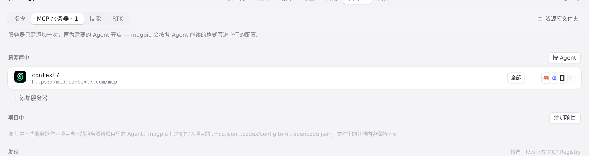
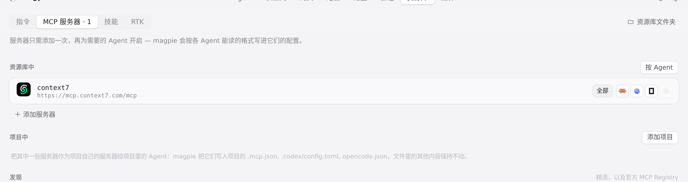

#648 界面预览
commit bf83407 · 回到 PR · 资源库里服务器/技能行的「全部」与 Agent 图标之间新增了一个占位元素（::before，宽度按 --lib-agent-count 计算），悬停展开时它收窄，使「全部」按钮和整行宽度保持不动；同时只有 data-agent 的图标参与悬停时的外边距展开。效果是悬停「全部」时图标仍会扇形展开，但行不再因宽度变化而抖动。
红线是鼠标走过的轨迹，红色圆环是一次点击；底部文字是这一步在做什么。空格暂停，← → 逐段查看。

资源库行内 Agent 图标的悬停展开 · 指针不在行上时，服务器行的「全部」与 Agent 图标

资源库行内 Agent 图标的悬停展开 · 悬停「全部」、图标展开后，同一行「全部」的位置与行高
 资源库行内 Agent 图标的悬停展开 · 指针移开后的同一行
资源库行内 Agent 图标的悬停展开 · 指针移开后的同一行